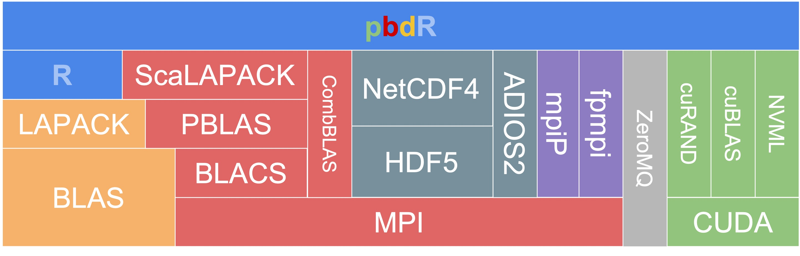

\[\qquad\]
\[t_p = t_s + t_n > t_s\]
\[\mbox{Max Speedup:}\quad\lim_{n \to \infty}\frac{t}{t_p} = \frac{t}{t_s}\]
\(t\) - Serial time (fixed)
\(n\) - Number of chunks (or processes)
\(t_n\) - single chunk time with \(n\) chunks
\(t_p\) - Parallel time
\(t_s\) - Serial section time
\[\qquad\]
\[t_p = t_s + t_n\]
\[\mbox{Speedup:}\quad\frac{t}{t_p} = \frac{t_s + nt_n}{t_s + t_n} = O(n)\]
\(t\) - Serial time (growing: \(t_{2n} = 2t_n\) )
\(n\) - Number of chunks (or processes)
\(t_n\) - single chunk time with \(n\) chunks
\(t_p\) - Parallel time
\(t_s\) - Serial section time
\[\qquad\] \[\qquad\]
\[t_p = t_s + t_n + t_o(n)\]
\(t\) - Serial time
\(n\) - Number of processes
\(t_n\) - single chunk time with \(n\) chunks
\(t_p\) - Parallel time
\(t_s\) - Serial section time
\(t_o(n)\) - Parallel overhead time
\[\qquad\] \[\qquad\] \[\qquad\] \[\qquad\]
\(t\) - Serial time
\(n\) - Number of processes
\(t_n\) - single chunk time with \(n\) chunks
\(t_p\) - Parallel time
\(t_s\) - Serial section time
\(t_o(n)\) - Parallel overhead time
forkmclapply and friends.footnote[A deeper discussion of fork memory (if you have interest) on YouTube by Chris Kanich (UIC)]
Operating system manages core affinity
Operating system tasks can compete
Core switching occurs frequently
But it works rather well!
lapply, mapply, and Mapmclapply(X, FUN, ...,
mc.preschedule = TRUE, mc.set.seed = TRUE,
mc.silent = FALSE, mc.cores = getOption("mc.cores", 2L),
mc.cleanup = TRUE, mc.allow.recursive = TRUE, affinity.list = NULL)
mcmapply(FUN, ...,
MoreArgs = NULL, SIMPLIFY = TRUE, USE.NAMES = TRUE,
mc.preschedule = TRUE, mc.set.seed = TRUE,
mc.silent = FALSE, mc.cores = getOption("mc.cores", 2L),
mc.cleanup = TRUE, affinity.list = NULL)
mcMap(f, ...)
.footnote[ \(^*\)Hastie, Tibshirani, and Friedman (2009) The Elements of Statistical Learning, Second Edition, (2009). link]
Resampling data with replacement and repeating estimation
Results in a sample of estimates/predictions - can estimate its distribution
Data: \({\mathbf Z} = (z_1,z_2,\ldots,z_N)\), where \(z_i = (y_i,x_i)\)
Model: Let \(S({\mathbf Z})\) be an estimated quantity from the data
Sample with replacement \(B\) sets of size \(N\) from data
Fit model to each of the reseampled \(B\) sets \(\{S({\mathbf Z^{*1}}), S({\mathbf Z^{*2}}),\ldots, S({\mathbf Z^{*B}})\}\)
Use as sample from the sampling distribution of the estimator
Stands for bootstrap aggregation
Simple models (low bias and high variance models) on resampled data
Generalized by random forest to sampling subsets of predictors
Let \(\widehat{S({\mathbf Z})} = \frac{1}{B}\sum_{b=1}^B S({\mathbf Z^{*b}})\) (bootstrap sample mean)
Majority vote if discrete
Reduces variance of the estimate
To make a prediction at \(x\):
Regression: \(\widehat{f^B_{\rm rf}}(x) = \frac{1}{B}\sum_{b=1}^B T_b(x)\)
Classification: Let \(\widehat{C}_b(x)\) be the class prediction of the \(b\)th random-forest
tree. Then \(\hat{C^B_{\rm rf}}(x)\) = majority vote \(\{\widehat{C}_b(x)\}^B_1\)
\[\qquad\]
\[\qquad\]
Increasing weights on misclassified observations (fits\(^*\) additive model framework)
Sequential, so parallelization within a model
Discrete AdaBoost \(^*\)
.footnote[ \(^*\) Algorithm 10.1 in Hastie, Tibshirani, and Friedman (2009)]
KPMS-IT4I-EX/code/rf_serial.r{.r include = "code/rf_serial.r"}
KPMS-IT4I-EX/code/rf_cv_serial.r{.r include = "code/rf_cv_serial.r" lines=c(3,4,11:32)}
KPMS-IT4I-EX/code/rf_cv_mc.r{.r include = "code/rf_cv_mc.r" lines=c(3,4,11:32)}
 * BLAS: Basic Linear Algebra Subroutines - A matrix multiplication library
* vector-vector (Level-1), matrix-vector (Level-2), matrix-matrix (Level-3)
LAPACK: dense and banded matrix decompositions and more
Implementations: OpenBLAS, Intel MKL, Nvidia nvBLAS, Apple vecLib, AMD BLIS, Arm Performance Libraries
FlexiBLAS: A BLAS and LAPACK wrapper library with runtime exchangable backends
.footnote[ https://github.com/Enchufa2/r-flexiblas
https://cran.r-project.org/package=flexiblas]
.footnote[*Parallel Statistical Computing with R: An Illustration on Two Architectures arXiv:1709.01195]
KPMS-IT4I-EX/code/rf_serial.r{.r include = "code/rf_serial.r"}
KPMS-IT4I-EX/code/rf_mc.r{.r include = "code/rf_mc.r"}
Guaranteed reproducibility
Possibly overlapping streams
Reproducibility for same number of streams
Guaranteed independent streams
KPMS-IT4I-EX/code/rf_mc.r{.r include = "code/rf_mc.r"}
KPMS-IT4I-EX/code/rf_karolina_pbs.sh{.sh include = "code/rf_karolina_pbs.sh"}